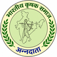

Single crop
One standing crop, often paddy. Market, weather and bought inputs hit the whole year at once.

Bharatiya Krishak Samaj PujoOrganised by KarmYog for the 21st Century. Bharatiya Krishak Samaj is the organising partner, not the title sponsor.
Institutional briefing Not a government document No endorsement claimed
For institutions
A briefing for government stakeholders, MLAs, functionaries, institutions and influencers. No government partnership, endorsement or scheme is claimed.
Bharatiya Krishak Samaj Pujo is a Sharadiya 2026 gathering in Kolkata. It is organised by KarmYog for the 21st Century. Bharatiya Krishak Samaj is the organising partner. Bharatiya Krishak Samaj is not the title sponsor.
Beside the festival week sits a live Integrated Farming demonstration in the East Kolkata Wetlands, 500 metres from Sector V. That demonstration is being built.
The mobilisation already on this project is about 5,000 village farms. That figure is a Target. It is not a completed count. It is not a government target adopted by any department on this page.
| Civic window | 16-20 October 2026, Kolkata |
|---|---|
| Venue | To be announced |
| Demonstration | East Kolkata Wetlands, 500 metres from Sector V. Being built. |
| Village farms | About 5,000. Target, not a census. |
| Organiser | KarmYog for the 21st Century |
| Organising partner | Bharatiya Krishak Samaj |
West Bengal's small and marginal holdings, input costs, flood and cyclone risk, and seasonal cash gaps are already described in this project's Integrated Farming material. This page does not add new impact percentages.
It asks institutional readers to look at a public demonstration they can eventually walk, and a mobilisation that needs local legitimacy.
The Puja is when Bengal gathers. This gathering is meant to bring the unnamed farmer into view, including an award ceremony on Ashtami evening for farmers the state does not usually photograph.
Nominations on the main Pujo site have no entry fee. Recognition is not a substitute for a working farm. It is why the farm story is allowed to stand next to the festival.
The model on file is a closed-loop holding: water, horticulture, livestock, soil repair and careful tools on one small farm. Leftover becomes the next input. The demonstration is being built so the model is not only a diagram in a brief.
This is a model, not a notified scheme.
One standing crop, often paddy. Market, weather and bought inputs hit the whole year at once.
Several enterprises on the same land. One leftover becomes the next free input. Daily, monthly and seasonal work together.
On this project, FarmTech and AgriTech names the careful-tools layer already written into the Integrated Farming model: monitoring, drip, pond energy and diagnostics where they help a small farm.
That is a model-based sketch. A fuller public definition is to be confirmed. This page does not list vendors, apps, or guaranteed yields. It does not name a state AgriTech mission.
Neighbourhood, awards, exhibition. Civic window 16-20 October 2026, Kolkata. Venue to be announced. The Puja is not recast as an agriculture conference.
The live demonstration in the East Kolkata Wetlands, 500 metres from Sector V, is being built. It is not presented as finished public works.
The 5,000-farm aim pairs each village site with a patron and a local farmer team. That pairing is intended. It is not a live allocation engine. Payment is not taken on this website. Committee names remain to be announced where they are not yet named.
The intended story is a difficult-looking site turned into a working integrated farm, after the work moved to the side people can reach. Before-photographs, the named plot, and the exact public wording are pending confirmation.
Do not read the frames below as a finished documentary. They are empty until verified stills are approved.
How the site stood. No before-photograph is published here.
The work was shifted for access. The map of that decision is still to be confirmed.
A live integrated farm is being developed: crop, water, animals and market on one holding.
A public feed sits here for verified stills when the team posts them. Nothing is invented in the meantime.
Leftover becomes input. That is the farm people should be able to walk. Not yet available as a finished visit.
About 5,000 village integrated farms remains a target, not a result already achieved.
MLAs, officers, civic voices and influencers are invited to understand the execution, visit when the demonstration can be walked, and say clearly what would make village-farm pairing responsible.
This is a request for a briefing, not a campaign advertisement, not a party whip, and not a request for letterhead.
West Bengal's assembly has 294 seats. That number is the size of the stakeholder universe. It is not a list of endorsements. It is not 294 partners. It is not upgraded to 295 on this page.
Bharatiya Krishak Samaj Pujo is a Sharadiya 2026 gathering that names the farmer, shows Integrated Farming, and is building a live demonstration beside the festival week.
Organised by KarmYog for the 21st Century. Bharatiya Krishak Samaj is the organising partner, not the title sponsor.
Proposed: a public demonstration of Integrated Farming and a mobilisation target of about 5,000 village farms. Those farms are a goal, not a government target on this page. Being executed: the civic Puja window of 16-20 October 2026 in Kolkata, and a demonstration farm that is being built. Venue, committee and ritual clocks remain to be announced.
Look, question, visit when the demonstration can be walked, and say what would make village-farm pairing responsible. Not a scripted endorsement.
No. Nothing here is a claimed government partnership, endorsement or scheme. No ministry is named as a partner. No scheme code is claimed.
West Bengal's assembly has 294 seats. That is the scale of the stakeholder universe, not a list of endorsements or partners.
Use the form on this page. It downloads a file to your device. You may also write to contact@bkswbengal.org or call +91 86552 46764.
Civic dates 16-20 October 2026 in Kolkata. Organiser and organising partner as named above. Demonstration being built in the East Kolkata Wetlands, 500 metres from Sector V. Venue, committee and ritual clocks remain to be announced.
The careful-tools layer already in the Integrated Farming model: monitoring, drip, pond energy and diagnostics where they earn their keep. A fuller definition is to be confirmed. It is not a state mission on this page.
The website downloads a JSON file to this device. It does not POST the form. It does not store the information on a server. It does not log you with a department. If you later send the file, that handling is outside this website.
For institutional readers. No ministry, scheme or political party is named as a partner on this page. You may also write to contact@bkswbengal.org or call +91 86552 46764.
Nothing on this page takes money. The form does not POST. A briefing request is not a ticket raised with a department.